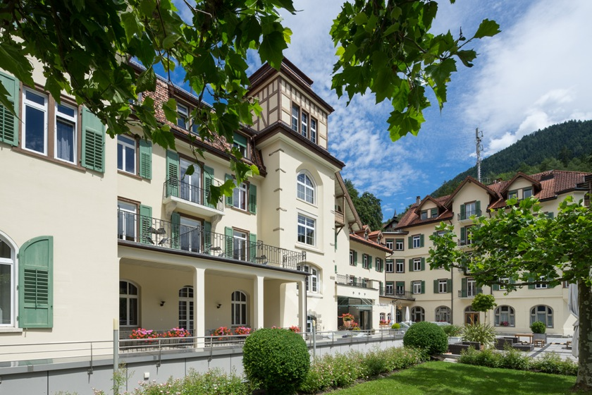
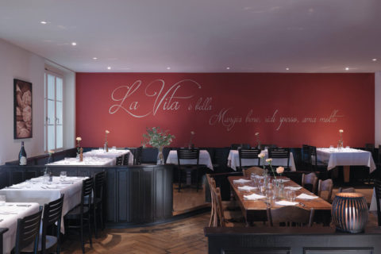
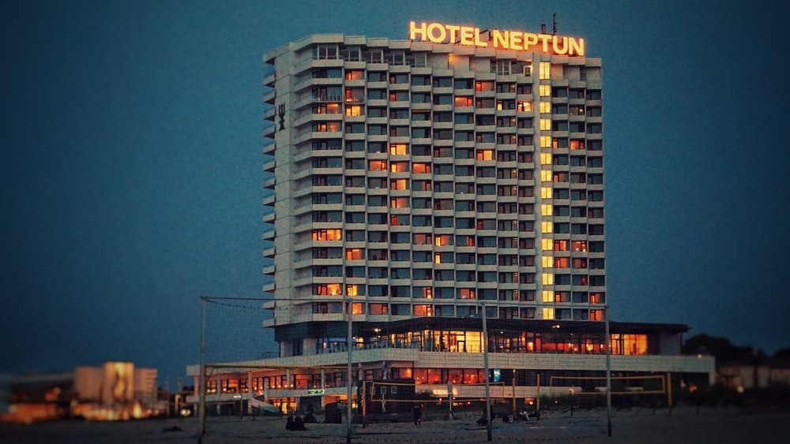

Welcome to my profile
Since the beginning of my career in the hotel industry in 2001, my goal has always been to become a hotel director. The combination of operational experience and academic knowledge is always essential for me in the hospitality industry. Product management is the next level I want to add to my operational and marketing experience. A Ecole hôtelière de Lausanne undergraduate, whose strengths are marketing, data analysis and technical knowhow. A driven individual who is dedicated to work and eager to learn.
About me in person
With me you win a hardworking, agile, flexible employee who approaches his activities quickly and with quality awareness under high pressure. Multimedia skills are indispensable nowadays. Critical thinker with a strong judgment skill.Through my sensitive, charming and reliable manner I have always been able to establish a good contact to my co-workers and superiors, which has remained with me until today. In the past I have worked hard on my ability to criticize and on my motivated stubbornness. I have always been able to passionately show my role model function and leadership strength through the most diverse project activities and cross-departmental work.
Professional experience
European Recruitment Manager
Swiss School of Toruism and Hospitality EHL Passugg (2014-2019)
Student recruitment, annual planning of sales activities, target marketing, managing of the CRM "Hubspot", exhibition planning, team management, collaborate with internal and external steakholders, target social media campaigns, reporting to the chief operating officer and sales & marketing manager.
Chef de Rang
Flims Waldhaus Mountain Resort & Spa – Pizzaria Pomodoro (2009-2012)
Service station with up to 40 persons in double seating, including bar/wine bar representation.
Rezeption / Concierge
Hotel Neptun Arkona & Spa (2008-2009)
Check-in/out, guest relation, Micros Fidelio & Micros Fidelio Suite8

Education
BSc in international Hospitality Management 2019-2021
Ecolè Hôtelière de Lausanne & EHL Student Ambassador Advisor
Dipl. Hôtelier-Restaurateur 2012-2015
Swiss School of Tourism & Hospitality EHL Passugg
Vocational Education as "Hotelfachmann" in Germany, 2001-2004
Hotel am Leuchtturm
Knowledge
Office Tools:
Excel (Pivot, Macros, Coding), Word (formatting, APA referencing), PowerPoint (professional design for business presentation), Tableau, SPSS IBM Software for data analysis.
Adobe:
InDesign, Illustrator: Logo design, brochures & flyer design from scratch.
CRM Hubspot:
Data cleaning, Lead generation and nutoring, developing landingpages, social media campaigns, mass mailings, CTA, sales & marketing visualization.
Subjects and Electives at EHL
During my training at the EHL I was particularly interested in these subjects:
Revenue management, rooms forecasting, corporate finance, trading, project management, real estate finance “Project: Real Estate Finance “Structuring a Hotel Transaction for your Real Estate Investment Vehicle”
Elective courses 6th semester at the EHL, Lausanne
1.)Prototype your digital startup
2.)Technology trends in the hospitality industry - Programming skills for businesses
3.)Big Data Strategy for the Hospitality Industry – Project: Sentiment Analysis, Predictive Analysis, Text mining, Factor analysis